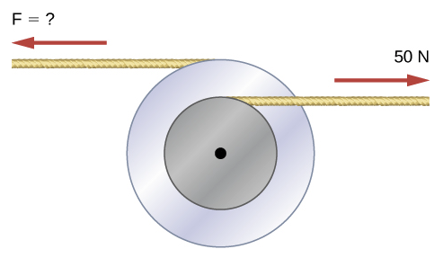
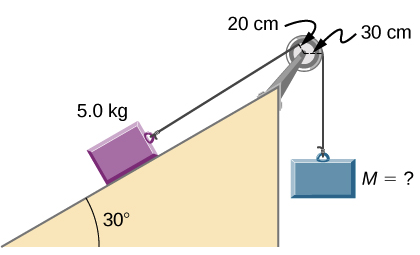
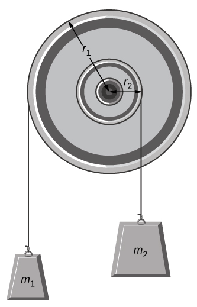
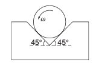
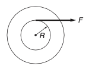
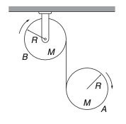
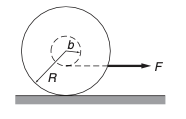
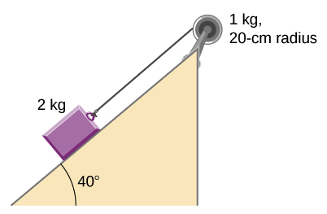
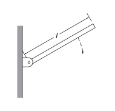

D5.9 Problems#
Problem 1
Two flywheels of negligible mass and different radii are bonded together and rotate about a common axis (see below). The smaller flywheel of radius 30 cm has a cord that has a pulling force of \(50.0\) N on it. What pulling force needs to be applied to the cord connecting the larger flywheel of radius \(50.0\) cm such that the combination does not rotate?

This problem is a slightly modified version from OpenStax. Access for free
# DIY Cell
Problem 2
What hanging mass must be placed on the cord to keep the pulley from rotating (see the following figure)? The mass on the frictionless plane is \(5.0\) kg. The mass on the plane is connected to a cord that wraps around the pulley’s inner radius of \(20.0\) cm. The hanging mass is connected to a cord that wraps around the pulley’s outer radius of \(30.0\) cm.

This problem is a slightly modified version from OpenStax. Access for free
# DIY Cell
Problem 3
You have a grindstone (a disk) that is \(90.0\) kg, has a \(0.340\) m radius, and is turning at \(90.0\) rpm, and you press a steel axe against it with a radial force of \(20.0\) N.
Assuming the kinetic coefficient of friction between steel and stone is \(0.20\), calculate the angular acceleration of the grindstone.
How many turns will the stone make before coming to rest?
This problem is a slightly modified version from OpenStax. Access for free
# DIY Cell
Problem 4
A pulley of moment of inertia \(2.0\) kgm\(^2\) is mounted on a wall as shown in the following figure. Light strings are wrapped around two circumferences of the pulley and weights are attached. Assume the following data: \(r_1 = 50.0\) cm, \(r_2 = 20.0\) cm, \(m_1 = 1.0\) kg, and \(m_2 = 2.0\) kg. What are
the angular acceleration of the pulley
the linear acceleration of the weights?

This problem is a slightly modified version from OpenStax. Access for free
# DIY Cell
Problem 5
A uniform cylindrical drum of radius \(R\) and mass \(M\) rolls without slipping down and incline plane at angle \(\theta\). What is the linear acceleration of the the CM? Be very specific to the location/orientation of coordinate system.
Kleppner and Kolenkow has an excellent example of this problem, but try to not look at it before solving it yourself.
# DIY Cell
Problem 6
A cylinder of mass \(M\) and radius \(R\) is rotated in a uniform V groove with constant angular speed \(\omega\). The coefficient of friction between the cylinder and each surface is \(\mu\). What torque must be applied to the cylinder to keep it rotating?

This is Problem 7.10 in Kleppner and Kolenkov.
# DIY Cell
Problem 7
A wheel is attached to a fixed shaft, and the system is free to rotate without friction. To measure the moment of inertia of the wheel–shaft system, a tape of negligible mass wrapped around the shaft is pulled with a known constant force \(F\). When a length \(L\) of tape has unwound, the system is rotating with angular speed \(\omega_0\). Find the moment of inertia \(I_0\) of the system.

This is Problem 7.11 in Kleppner and Kolenkov.
# DIY Cell
Problem 8
Drum A of mass \(M\) and radius \(R\) is suspended from a drum B also of mass \(M\) and radius \(R\), which is free to rotate around its axis. The suspension is in the form of a massless metal tape wound around the outside of each drum, and free to unwind, as shown. Gravity is directed downward. Both drums are initially at rest. Find the initial acceleration of drum A, assuming that it moves straight down.

This is Problem 7.24 in Kleppner and Kolenkov.
# DIY Cell
Problem 9
A yo-yo of mass \(M\) has an axle of radius \(b\) and a spool of radius \(R\). Its moment of inertia can be taken to be \(\frac{1}{2}MR^2\). The yo-yo is placed upright on a table and the string is pulled with a horizontal force \(F\) as shown. The coefficient of friction between the yo-yo and the table is \(\mu\). What is the maximum value of \(F\) for which the yo-yo will roll without slipping?

This is Problem 7.27 in Kleppner and Kolenkov.
# DIY Cell
Problem 10
A uniform cylindrical grindstone has a mass of \(10.0\) kg and a radius of \(12\) cm.
What is the rotational kinetic energy of the grindstone when it is rotating at \(1.5\times 10^3\) rev/min?
After the grindstone’s motor is turned off, a knife blade is pressed against the outer edge of the grindstone with a perpendicular force of \(5.0\) N. The coefficient of kinetic friction between the grindstone and the blade is \(0.80\). Use the work energy theorem to determine how many turns the grindstone makes before it stops.
This problem is a slightly modified version from OpenStax. Access for free
# DIY Cell
Problem 11
A \(2.0\) kg block on a frictionless inclined plane at \(40\^circ\) has a cord attached to a pulley of mass \(1.0\) kg and radius \(20.0\) cm. The block slides a distance of \(0.50\) m.
What is the acceleration of the block down the plane?
What is the work done by the cord on the pulley?

This problem is a slightly modified version from OpenStax. Access for free
# DIY Cell
Problem 12
A thin plank of mass \(M\) and length \(l\) is pivoted at one end, as shown. The plank is released at \(60.0^\circ\) from the vertical. What is the magnitude and direction of the force on the pivot when the plank is horizontal?

This is Problem 7.20 in Kleppner and Kolenkov.
# DIY Cell
Problem 13
A marble of mass \(M\) and radius \(R\) is rolled up a plane of angle \(\theta\). If the initial velocity of the marble is \(v_0\), what is the distance \(l\) it travels up the plane before it begins to roll back down?
This is Problem 7.25 in Kleppner and Kolenkov.
# DIY Cell